B-17 폭격수가 주인공인 영화 : 우리 생애 최고의 해 (상)
게시: 2020-10-01T06:30:55+09:00
'우리 생애 최고의 해' (The best year of our lives)는 '벤허'와 '로마의 휴일' 등으로 유명한 명감독 윌리엄 와일러(William Wyler)가 감독한 1946년 흑백 영화인데, 제가 알아볼 정도의 유명 배우는 출연하지 않습니다만 아카데미 작품상 감독상 등 무려 7개 부분을 석권한 명작 영화입니다. 아마 이 영화가 무슨 영화인지 줄거리는 전혀 모르셔도'우리 생애 최고의 해'라는 제목만큼은 다들 들어보셨을 것 같습니다. 이 영화는 제2차 세계대전이 끝나고 고향인 Boone City (아마 가상의 도시인 듯)로 돌아오는 길에 만난 육해군 3명의 제대 군인들의 이야기입니다. 저는 시대극을 매우 좋아하는데, 이유는 지금과는 조금씩 다른 당시의 여러가지 소소하지만 나름대로 의미가 있는 생활상 등이 꽤 재미있기 떄문입니다. 특히 이 영화는 제2차 세계대전이 끝나고 미국 역사상 최고의 황금기가 막 시작될 때의 상황이 어땠는지 제대 군인들은 어떤 갈등을 겪었는지 등을 볼 수 있어 좋습니다.

(포스터도 아주 고리타분해보입니다.)
이 3명의 주인공은 배경이 다음과 같습니다. 프레드 데리 (Fred Derry) : 20후반~30초반, 대위, 유럽, 육군항공대 B-17 폭격수, 전쟁 전 직업은 수퍼마켓 청량음료 코너 판매원 알 스티븐슨 (Al Stephenson) : 50대, 중사, 태평양, 육군 보병, 전쟁 전에는 은행원 호머 패리쉬 (Homer Parrish) : 20대, 일병, 태평양, 해군 항공모함, 양손 절단, 전쟁 전에는 학생 이 셋은 미국내 어떤 공항에서 다른 많은 제대 군인들과 함께 고향으로 가는 비행기편을 기다리다 마침내 고향 쪽으로 가는 B-17 폭격기를 함께 얻어타면서 서로 알게 됩니다. 당시 미 육해군의 전체 숫자는 약 1천6백만이었고 그 중 절반인 8백만이 해외에 파병되어 있었습니다. 1945년 전쟁이 끝나면서 그들을 집으로 실어오는 것은 보통 일이 아니었는데 이 귀국 과정도 마술 양탄자 작전 (Operation Magic Carpet)이라는 이름으로 항공모함부터 여객선, 화물선, 수송선 등 별의별 선박이 동원되어 이루어졌습니다.
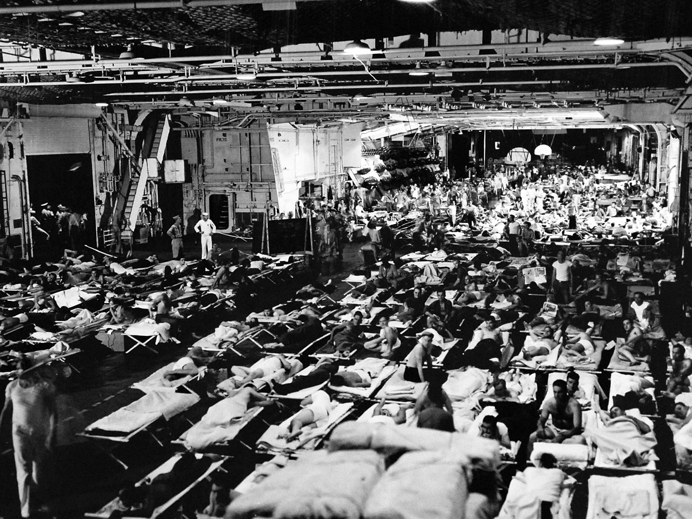
(마술 양탄자 작전에 참여 중인 미해군 항모 USS Enterprise (CV-6)입니다. 보기만 해도 냄새가 나는 것 같지요?) 귀국 병사들은 미국 내에 도착하고 나서도 그 드넓은 북미 대륙에서 각자의 집으로 가는 일이 또 보통이 아니었을 것입니다. 영화 맨 앞부분이 바로 그런 상황을 다루고 있는데 여기서 나오는 것이 ATC 입니다. (프레드가 어떤 공항의 아메리칸 에어라인 데스크에서 분 시티로 가는 항공편을 애타게 찾고 있습니다.) 항공사 직원 : 매일 3개편이 있긴 한데요, 남은 좌석이 없네요. 예약을 해드릴까요? 프레드 : 예. 항공사 직원 : 성함이 어떻게 되시지요? 프레드 : 데리요. D-E-R-R-Y. 이름은 프레드(Fred)고요. 얼마나 기다려야 할까요? 항공사 직원 : 19일에 있을 제37 항공편에 자리를 드릴 수 있네요. 프레드 : 그렇게는 못 기다려요. 방금 해외에서 돌아왔고 이젠 집에 가고 싶다고요. 항공사 직원 : 대기 명단이 아주 긴데요. (중략) 항공사 직원 : ATC에 가보시지 그러세요, 대위님? 프레드 : 그게 어디 있지요? 항공사 직원 : 터미널을 나가셔서 활주로 건너편에 있어요. 여기서 말하는 ATC란 Air Transport Command를 말하는 것으로서, 세계대전 중에 창설된 육군 항공 수송 부대입니다. 미국에서 세계 각지에 병력과 전쟁 물자, 특히 국내 공장에서 생산된 항공기를 수송하기 위해 창설된 조직입니다. 몇차례 개편을 거쳐 지금은 Air Mobility Command라는 이름으로 여전히 운용되고 있습니다.
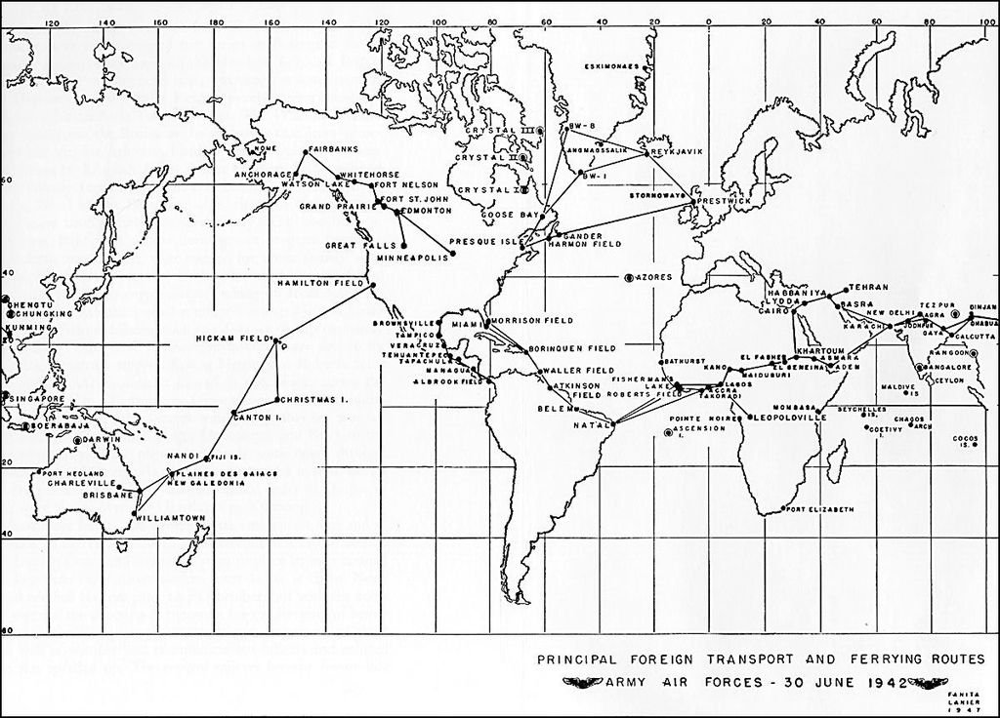
(1942년 6월 미육군 항공대 수송사령부 AAF Ferrying Command의 주요 항공로입니다. 특히 아프리카를 횡단하여 인도를 거쳐 중국 남부까지 연결되는 항공로의 스케일은 정말 놀랍군요.)
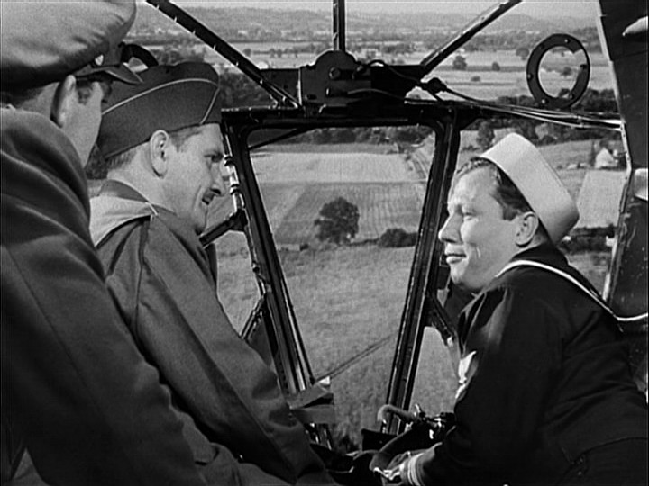
(B-17 폭격기를 타고 고향으로 가다니 ! 정말 미국다운 스케일이군요.) ATC에서 많은 제대 군인들과 함께 한참을 기다리던 프레드는 분 시티로 가는 B-17 폭격기를 얻어타고 고향으로 갑니다. 여기서 알과 호머를 만나는데, 이들은 비행 중에 원래 전쟁 중 프레드의 위치인 폭격수 자리에서 미국의 풍경을 감상하며 이런저런 이야기를 나눕니다. 특히 민군 공용으로 쓰는 공항 상공에서 호머는 엄청난 대수의 군용기들이 주기되어 있는 것을 보고 감탄합니다. 호머 : 저는 비행기가 이렇게 많은 줄은 몰랐어요. 프레드 : 지금은 저걸 폐기처분 하고 있다네. 호머 : 뭐라고요? 세상에나. 1943년에 저런 것들이 있었으면 정말 좋았을텐데요. 알 : 그래. 그랬겠지. 어떤 것들은 아주 새거야. 공장에서 고철상으로 직행하는 거지. 지금 저것들의 용도는 그거 밖에 없군.
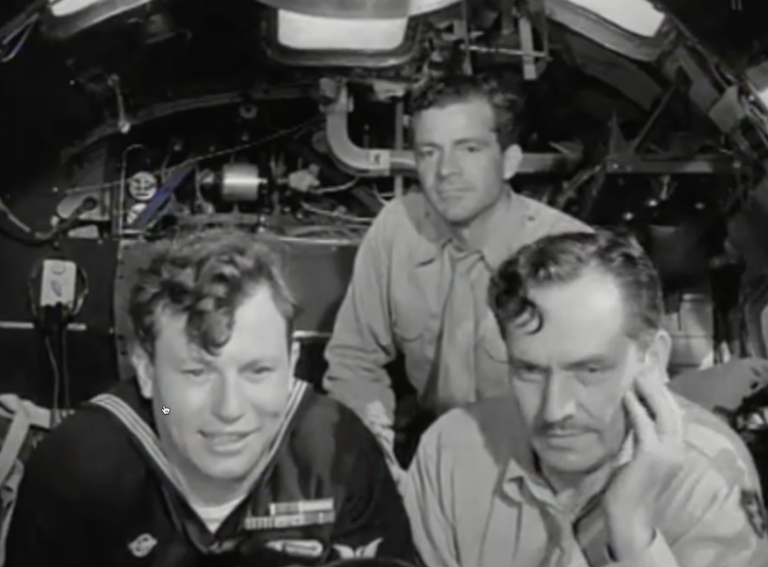 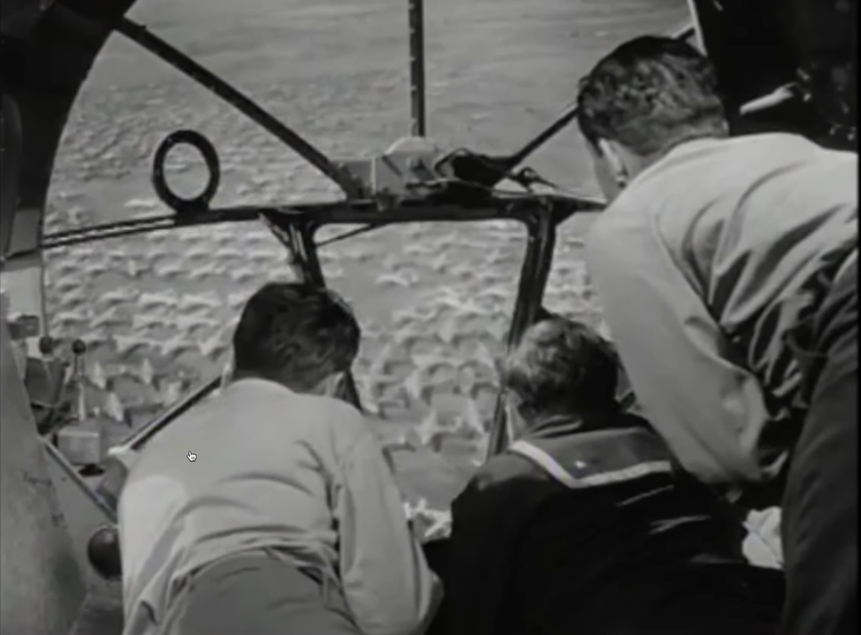
(호머와 알, 프레드가 군용 공항에 모아놓은 폭격기들의 규모에 감탄하는 모습입니다. 원래 전쟁 직전 영국 해군성 산정으로는 영국의 철강 및 선박, 항공기 등의 생산 능력으로는 1년에 전함 2.5척과 항공모함 2척 정도가 최대치라고 보았습니다. 그런데 미국은 약 3년 동안 항공모함만 151척을 뽑았고 그 중에서 Essex급 정규 항모만도 18척을 뽑았습니다. 건조 중이던 6척도 전후에 결국 다 완료했고요. 그러니 정말 엄청난 생산량을 보여준 것이지요.)
이들은 공항에 도착한 뒤 택시를 함께 타고 각자의 집에 차례로 내리며 헤어집니다. 두 팔을 잃은 호머를 제일 먼저 내려준 알과 프레드는 알의 집으로 갑니다. 여기서 나이가 훨씬 많은 알은 프레드의 집으로 먼저 가자고 양보하지만 계급이 더 높은 프레드는 거절하고 알의 집으로 먼저 갑니다. 특히 택시비를 낼 때 상급자가 지갑을 여는 것은 미국인들도 마찬가지네요. 하지만 정작 알의 집은 고급 아파트인데 프레드의 부모님이 사는 집은 변두리의 판자집 같은 서민 주택입니다. 프레드 : 궁전 같은 집에 사시네요 ! (Some barracks you got here.) 군 입대 전엔 뭘 하셨어요? 밀주업자 (bootlegger)? 알 : 그렇게 으리으리한 일은 아니었습니다. 은행 일을 했어요. (택시기사에게) 얼마 나왔나요? 프레드 : 중사, 주머니에서 손 떼게. 내가 상급자야. 알 : (웃으며) 예, 대위님. 프레드 : 행운을 빌게요, 친구. 알 : 고맙습니다.
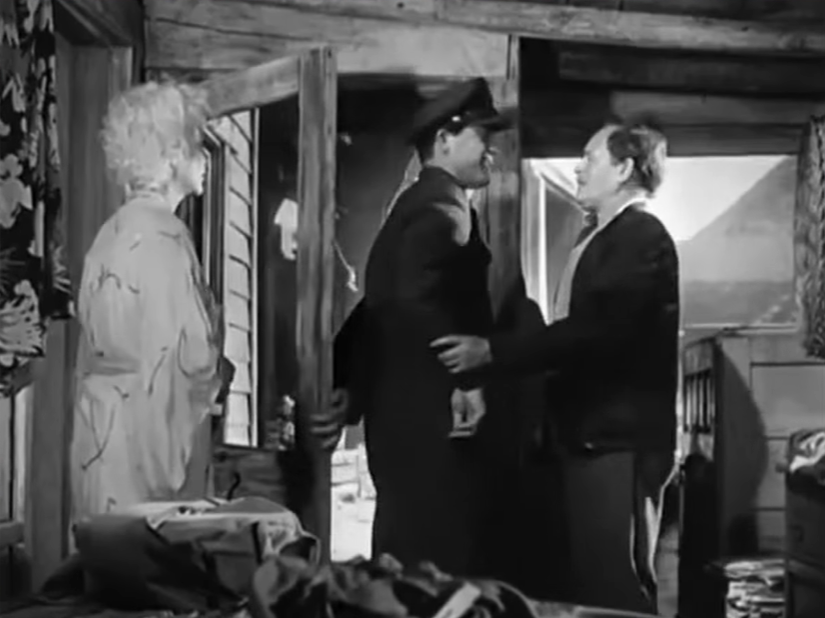 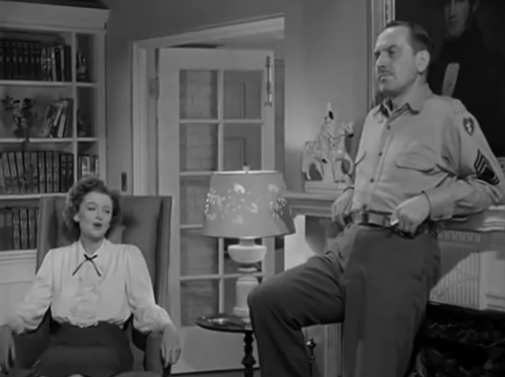
(보시다시피 프레드 대위의 부모님이 사시는 집은 변두리의 누추한 집이고, 알 중사의 집은 수위가 딸린 고급 아파트의 넓직한 집입니다.)
제2차 세계대전 직전까지만 해도 미국 중산층 가정에는 상주 가정부가 있는 것이 당연한 것이었나 봅니다. 알은 딸 페기가 설거지를 했다고 하자 화를 내며 의아해합니다. 페기 : 설거지 마쳤어요. 알 : 왜 네가 그런 일을 하는 거니? 오늘 가정부 외출하는 날이니? (Is this the maid's night out?) 페기 : 우리 가정부는 3년 전에 나가서 두번 다시 돌아오지 않았어요. 하지만 제가 가사 교육(Domestic Science)을 들었기 때문에 괜찮아요. 알 : 도대체 우리 가족에게 뭔 일이 생기고 있는 거냐?
알 스티븐슨 가족의 집에서 일하던 가정부는 나가서 어디로 갔으며 왜 돌아오지 않았을까요 ? 역사적으로 전쟁은 (국내에서 벌어지는 전쟁이 아니라면) 소외 계층의 소득과 경제적 입지를 강화시켜주는 경우가 많았습니다. 이미 제1차 세계대전 때 미국내 항공기 공장 노동자의 25%가 여성이었으니, 제2차 세계대전 때는 여성 노동력이 공장 등으로 더 많이 진출하는 것이 당연했습니다. 가령 항공기 공장에서 리벳(rivet)을 박는 일만 하더라도 여성이 남성보다 더 잘 했습니다. 남성이 하루에 650개의 리벳을 박는 것에 비해 여성은 평균 1000개를 박았다고 하네요. 가정부로 일하는 것보다 공장 노동자로 일하는 것이 훨씬 더 높은 소득과 안정적 생활을 보장했으니 알 가족의 가정부는 돌아올 일이 없었겠지요.
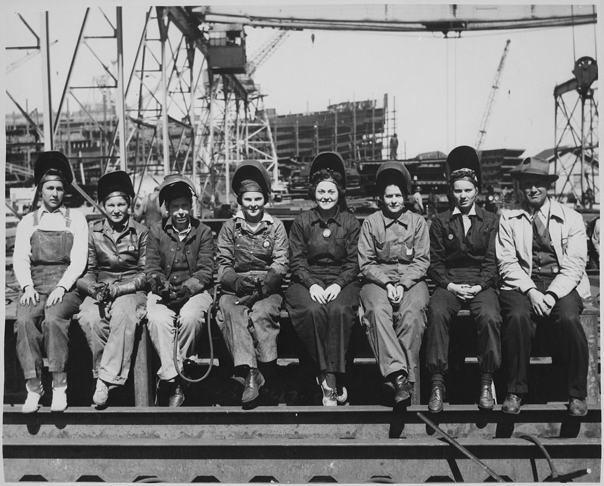
(1943년 미시시피 주 패스커굴라(Pascagoula) 조선소에서 일하던 여성 용접공들입니다.)
그렇게 여성 인권과 지위가 향상된 것은 좋은 일입니다만, 이제 전쟁터에서 살아돌아온, 특히 불구의 몸이 되어 돌아온 병사들은 과연 옛 일자리를 다시 되찾을 수 있었을까요 ? 그 일자리들은 없어졌거나, 여성들이 차지하거나, 혹은 무슨 이유로든 징집 대상이 아니었던 남성들이 차지하고 있었습니다.
가령 양 손을 잃은 호머는 가족들에 둘러싸여 환영받지만 아무래도 분위기가 어색합니다. 친척 아저씨가 와서 '넌 이제 뭘 할거니' 설교를 시작합니다. 우리 명절 때 모습과 비슷하네요. 아무튼 1945년 당시는 아직은 전쟁 경기로 인해 호경기를 누리고 있었던 모양입니다. 많은 사람들이 이제 곧 불경기가 닥칠 거라고 걱정했지만 이들을 기다리는 미래는 정반대였지요. 친척 아저씨 : 내가 말하는데, 이 나라는 이제 어려워질 게다. 물론 지금 당장은 전쟁 특수의 여파로 흥청거리지만 이건 썰물처럼 빠른 속도로 가라앉을 거야. 내년이면 우린 경기침체와 실업에 시달리게 될 거라구.
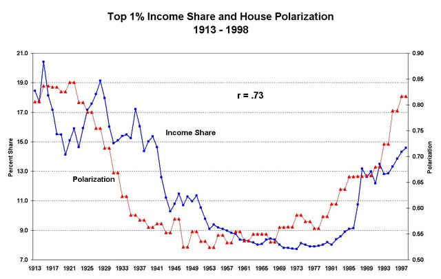
(미국 대압착 시대 "The Great Compression"이란 1940년대 초부터 시작된 부유층과 빈민층의 소득 격차가 줄어든 시대를 말합니다. 이는 대공황 이후의 뉴딜 정책과 제2차 세계대전에 따른 부유층에 대한 높은 세율 때문에 벌어진 일이고, 덕분에 제2차 세계대전 이후 월남전 이전까지가 미국 중산층의 황금기가 찾아왔습니다. 1980년대 들어 레이건이 감세를 시작하면서 빈부 양극화와 상위 1%가 차지하는 소득 비중이 다시 크게 늘기 시작했습니다.)
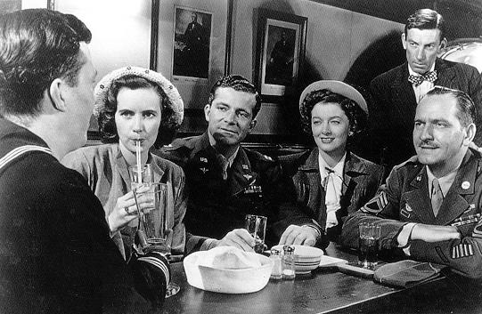
(맨왼쪽부터, 호머, 페기, 프레드, 알의 아내, 그리고 알입니다. 서있는 사람은 바의 주인이자 호머의 삼촌입니다.)
이제 B-17 폭격수(bombadier)였던 프레드 대위의 사정을 보시지요. 와이프와 딸을 데리고 바로 놀러나왔던 알은 우연히 바에서 프레드를 만나 즐거운 시간을 갖습니다. 그런데 알와 프레드 모두 너무 취해버리는 바람에 프레드도 알의 집에서 하룻밤 신세를 집니다. 다음날 아침 프레드를 알의 딸 페기가 차로 바래다 줍니다. 프레드와 페기는 서로에게 호감을 갖게 됩니다만, 프레드는 훈련소에서 만난지 1달 만에 결혼했던 아내가 있는 유부남입니다. 페기 : 전쟁 전에는 무슨 일 하셨어요, 프레드? 프레드 : 청량음료 판매대 점원이었어요. (I was a fountain attendant.) 페기 : 뭘 하셨다고요? 프레드 : 청량음료 판매원이요. (Soda jerk.) 페기 : 아. 프레드 : 놀라셨어요? 페기 : 예, 조금요. 그럼 프레드는 아주 맛있는 아이스크림 청량음료(ice-cream soda)를 만들었겠군요. 프레드 : 그럼요. 저는 청량음료 기계 뒤에서는 진짜 전문가였지요. 아이스크림 덩어리를 공중에 휙 던져올려서는 속도와 고도를 가늠한 뒤에... 짜잔 ! 한번도 콘 속에 넣지 못한 적이 없었다구요. 아마 제가 진짜 폭탄 투하를 배운 건 그때였을거에요. 페기 : 이제는 뭘 하실 생각이세요? 프레드 : 그 잡화점(drugstore)으로는 되돌아가지 않을 거에요. 왠지, 저는 루트비어(root-beer) 거품을 보고 신이 날 것 같지는 않거든요. 당장 뭘 할 지는 모르겠지만, 시간은 많으니 둘러 보려고요. 페기 : 아마 유럽 여러 곳을 보셨으니 분 시티는 꽤 따분하게 느껴지실 것 같아요. 프레드 : 제가 지금 앉은 이 자리에서는 전혀 그렇지 않은데요. 그냥 하는 소리가 아니에요. 진짜에요.
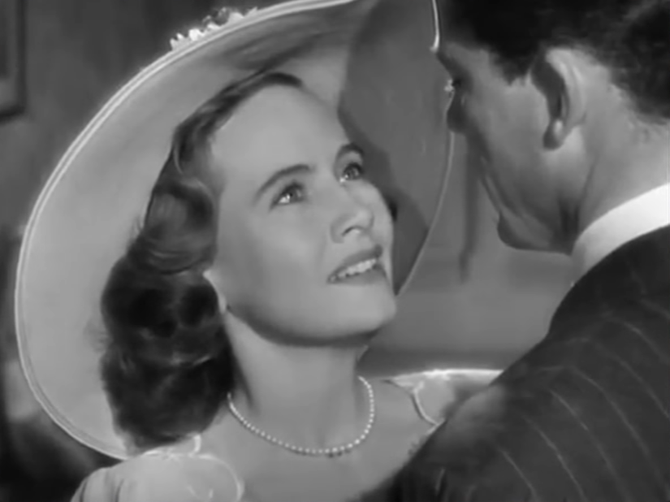
(항상 그렇지만 영화 속에서 제일 예쁜 아가씨는 똑똑하고 잘 생겼지만 가진 것 없는 청년과 사랑에 빠집니다. 여기 알의 딸 페기도 프레드에게 끌리는데... 문제는 프레드가 유부남이라는 것이지요.)
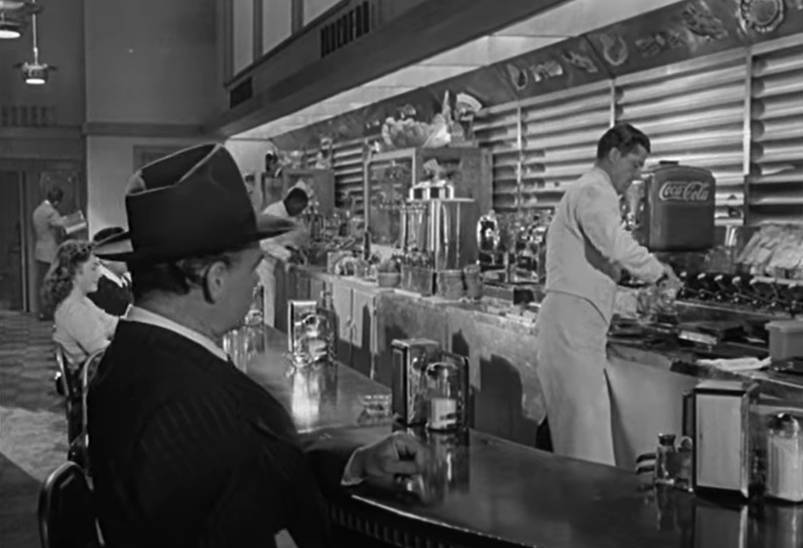
(우리나라에는 없는 직업이고, 아마 지금은 미국에도 없는 직업 같습니다만, soda jerk이란 잡화점 한쪽 구석에 있는 저런 간이 음식코너에서 아이스크림과 청량음료, 그리고 샌드위치 등의 간단한 음식을 만들어 파는 직원을 말하는 것입니다. 영화 후반부의 모습입니다만 결국 프레드는 그토록 돌아가고 싶지 않던 그 일자리로 돌아가게 됩니다.)
하지만 당장 갈 곳도 없던 프레드는 대위 군복을 입은 채로 일단 전에 일하던 잡화점으로 가봅니다. 하지만 가게가 바뀌었습니다. 프레드 : 여기가 불러드 잡화점 아니었나요 ? 점원 : 예 맞아요. 하지만 미드웨이 체인점에서 인수했지요. 프레드 : 아. 점원 : 하지만 불러드씨는 아직 여기 그대로 계세요. 저기 전화기 옆에 계신 분이요. 프레드 : 고맙습니다. (프레드는 불러드에게 갑니다.) 불러드 : 예 ? 아, 프레드 ! 프레드 : 안녕하세요, 불러드씨. 불러드 : 다시 보니 반갑구만. 프레드 : 반갑네요. 여기는 어떻게 된 거에요? 불러드 : 글쎄, 그냥 팔아버렸어. 미드웨이가 여기 들어선 지도 꽤 되었다네. (다른 점원들끼리 프레드에 대해 이야기합니다.) 점원1 : 저 사람 여기 일했던 사람 아니에요? 점원2 : 맞아, 그랬지. 아마 일자리를 찾아온 거겠지. 아마 취직을 할 수 있을 거야. 가슴에 즐비한 훈장들 좀 보라고. 점원1 : 글쎄요, 이렇게 제대 군인들이 넘쳐나니 안전한 일자리라고는 없을 것 같은데요. (다시 불러드와 프레드 장면) 불러드 : 새 지배인 쏘프씨(Mr Thorpe)를 만나보게나. 프레드 : 아, 아니에요. 그냥 불러드씨에게 인사드리려고 온 거였어요. 예전 일을 다시 하고 싶지는 않아요. 불러드 : 그래, 알겠네. 하지만 미드웨이는 대형 매장이라서 일자리 종류도 많다네. 이리 따라오게. 프레드 : 고맙습니다, 불러드씨.
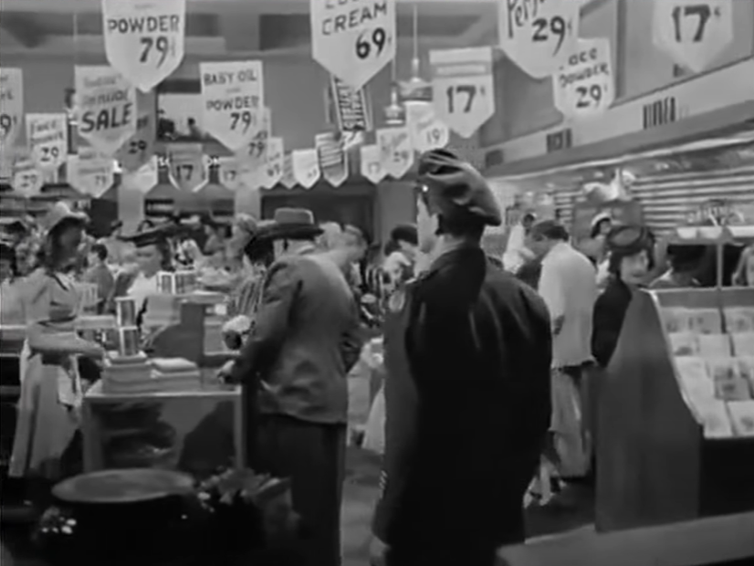
(미드웨이 잡화점입니다. 작은 백화점 수준이네요.)
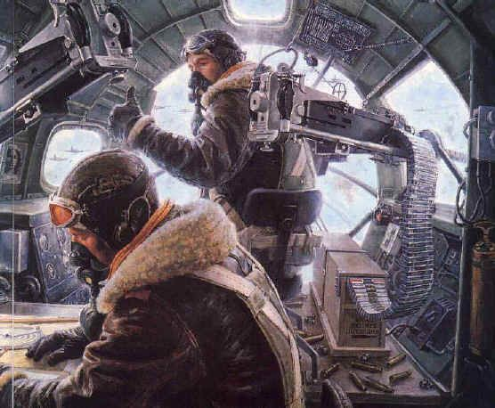
(B-17 코 부분 속의 '사무실'에서는 폭격수가 앞을 담당하고 그 뒤에 항법사가 앉아있습니다. B-17의 승무원 중에 조종사, 부조종사, 항법사, 그리고 폭격수 이 4명은 장교였고 나머지는 부사관 또는 사병이었습니다.)
(프레드가 지배인과 면접을 봅니다.) 쏘프 : 아주 대단한 군 경력이시군요. 프레드 : 그냥 평균입니다. 쏘프씨. 쏘프 : 사업체가 바뀌었으니 프레드씨에게 예전 일자리를 꼭 보장해줄 의무는 없습니다. 프레드 : 예전 일자리를 찾을 생각은 없습니다. 전 더 나은 일자리를 찾고 있습니다. 쏘프 : 무슨 자격증이 있나요 ? 경력은 어떤가요 ? 프레드 : 청량음료 판매대에서 2년, 노던 조준경(Norden bombsight)에서 3년을 보냈습니다. 쏘프 : 그렇군요. 군에 계실 때 구매 업무 경험이 있으신가요 ? 프레드 : 아니요. 쏘프 : 보급물자 같은 거 구매 해보신 적 없어요 ? 프레드 : 아니요. 저는 그냥 폭탄만 투하했습니다. 쏘프 : 인사 업무는요 ? 프레드 : 아니요. 쏘프 : 하지만 장교시니까 지휘를 하셔야 했겠지요. 부하들의 사기진작도 신경 쓰셔야 하고요. 프레드 : 저는 목표물에 폭탄 투하하는 것만 책임졌습니다. 아무도 지휘하지 않았어요. 쏘프 : 무척 중요한 기술이 필요한 일 같군요. 하지만 미드웨이 체인점에서는 그런 기술을 쓸 일자리는 없네요. 프레드 : 예. 쏘프 : 매장 관리인인 머켈(Merkel)씨의 조수 자리를 마련해드릴 수는 있습니다. 프레드 : '끈적거리는' 머켈이요 ? ("Sticky" Merkel?) 쏘프 : 클라렌스 머켈입니다. 프레드 : 그 친구 맞네요. 청량음료 판매대에서 제 조수 역할을 하던 친구에요. 쏘프 : 머켈은 무척 훌륭한 관리자입니다. 그런데 보니 프레드씨에게 권하는 일자리는 가끔씩 청량음료 판매대에서의 근무도 하셔야 하는 자리입니다. 프레드 : 임금은 얼마인데요? 쏘프 : 주급은 32.5달러입니다. 프레드 : 항공대에서 저는 월급이 400달러 이상이었는데요. 쏘프 : 전쟁은 끝났습니다.
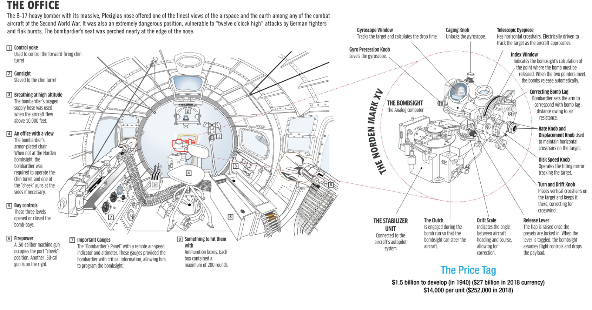
(그러니까 프레드는 B-17의 코부분에 해당하는 저 곳에서 노던 조준경을 가지고 폭탄을 투하 하는 일을 했던 것입니다. 고사포 피격 고도 이상의 높은 곳에서 안전하고 정확하게 폭격하는 것은 모든 공군의 꿈이었는데, 그러기 위해서는 높은 정밀도의 폭탄 투하 조준경(bombsight)가 필요했습니다. 미국이 영국에게도 끝까지 제공해주지 않은 것이 바로 심혈을 기울여 개발한 Norden bombsight 였습니다. B-17에 탑재되었던 이 조준기는 비행기의 고도와 속도 뿐만 아니라 바람의 방향까지 고려하여 정확한 투하 시점을 계산해주는 일종의 아날로그 컴퓨터였고 투하 코스에 들어가면 폭격기의 좌우 drift를 자동 제어해주는 자동 항법 장치까지 달려 있었습니다. 이 개발에만 당시 돈으로 15억불 (현재 가치로 250억불)이 들어갔는데, 참고로 핵폭탄 개발 계획인 맨해튼 프로젝트에는 20억불이 들어갔습니다. 하나당 제조 원가는 1만4천불, 요즘 가치로는 25만2천불이었습니다.
그러나 전후 산정해본 폭격 정확도는 꽤 실망스러웠습니다. 약 6km 상공에서 투하할 때 폭탄이 목표물 300m 안에 들어갈 확률이 30% 정도였답니다. 이건 영국 공군이 자체적으로 만든, 훨씬 조악한 수준의 조준기인 Mark XIV bombsight보다 크게 나을 것이 없는 수준이었습니다. 참고로 당시 많이 쓰이던 500파운드 짜리 폭탄의 살상 반경은 개활지에 서있는 사람을 대상으로 할 때는 약 100m, 건물을 대상으로 할 때는 약 30m였습니다.)
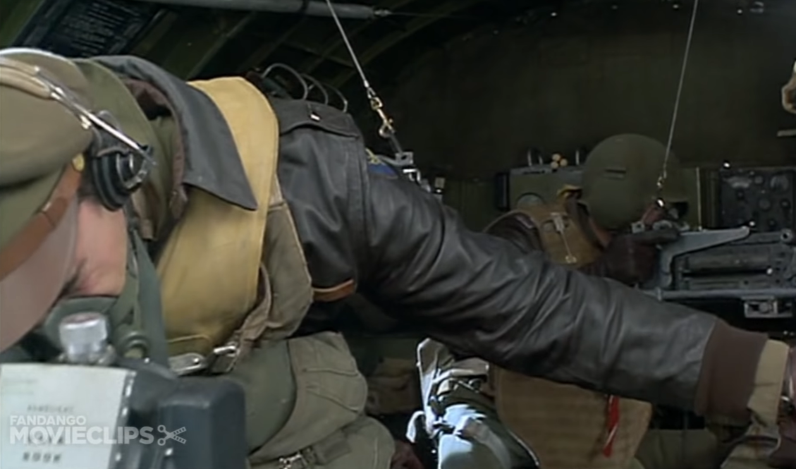 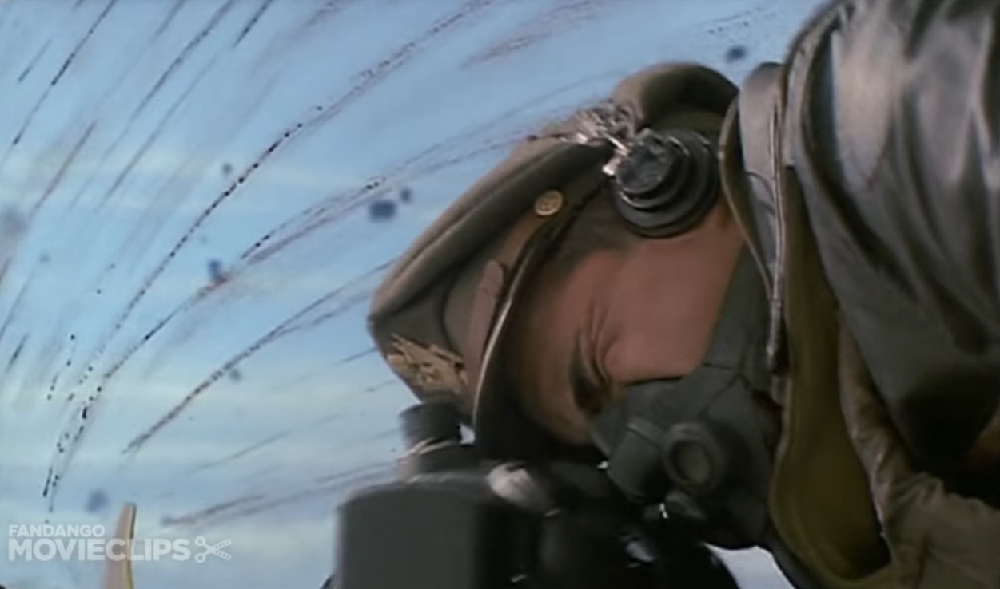
(위 사진 2장은 유명 영화인 '멤피스 벨'에서 따온 것입니다. 저기서 폭격수가 열심히 들여다 보고 있는 것이 노든 조준경입니다. 이 영화이든가 다른 영화이든가 기억이 안나는데, 목표물 상공에서 폭격 코스로 접어들면 조종사가 조심스럽게 조종간에서 손을 떼면서 폭격수에게 "이제 다 니 꺼야"라고 이야기하는 장면이 나오는데, 노든 조준경에서 폭격수의 조준하는 것에 따라 B-17이 미세하게 자동 조종되는 부분을 묘사한 것입니다.)
과연 당시 잡화점 점원이 주급 32.5불 (월급으로 대략 130불)을 받을 때, 전쟁에 참전했던 육군항공대 폭격수 대위는 400달러를 받았을까요 ? 일반 보병 소대 중사였던 알은 과연 얼마나 받았을까요 ? 그리고 알은 과거 직업인 은행원 자리를 되찾을 수 있었을까요 ?
궁금하시면 다음주에도 읽어주세요. 다음 편에 계속됩니다.

** 이 블로그의 사진들은 대부분 www.youtube.com/watch?v=48sXaRayW9A 에서 캡춰한 것입니다.
Source : www.reddit.com/r/WWIIplanes/comments/eikuzt/how_a_norden_bombsight_worked_akhil_kadidal/
en.wikipedia.org/wiki/Norden_bombsight
en.wikipedia.org/wiki/American_women_in_World_War_II
www.scripts.com/script.php?id=the_best_years_of_our_lives_3947&p=19